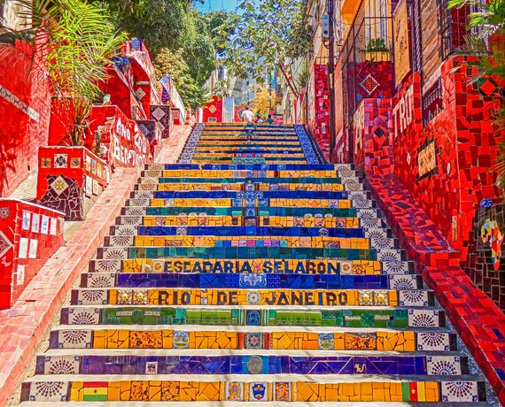

Why Rio de Janeiro?
Rio, the artistic city
The Escadaria Selarón, also known as the Selarón Steps or Lapa Steps, is a world-famous landmark in Rio de Janeiro that connects the bohemian neighborhoods of Lapa and Santa Teresa. This vibrant outdoor mosaic is the life's work of Chilean-born artist Jorge Selarón, who began renovating the dilapidated steps in front of his house in 1990 as a "tribute to the Brazilian people". The staircase features 215 steps stretching 125 metres long.
What began in 1990 as a side project by Chilean-born artist Jorge Selarón to fix the dilapidated steps in front of his house eventually became his life's work, which he famously declared was "never complete". Visitors to the steps will find a vibrant mosaic of hand-painted tiles depicting everything from soccer teams and birds to the mysterious recurring image of a pregnant African woman.
Activites in Rio
My favorite things to do
Ipanema Beach
This is one of Rio's beaches famous for its golden sands and the stunning backdrop of the Two Brothers Mountain. It's perfect for sunbathing and has the most stunning sunsets.
Location:
Avenida Vieira Souto in the Ipanema neighborhood of Rio
What I like about it
Ipanema Beach is my favourite, with just the right balance of atmosphere and peace. You can see people working out, playing football and volleyball, and enjoying the sunshine.
Sugarloaf Mountain
This renowned peak in Rio is famed for its iconic cable car ride and 396-meter-high peak. It offers amazing full views of the city, beaches, and Christ the Redeemer.
Location:
The Urca neighborhood of Rio, at the entrance to Guanabara Bay
What I like about it
You take two separate gondola rides up to Sugarloaf. Each trip lasts about 3 minutes, and the cable cars have 360-degree windows offering jaw-dropping views of the city.
Christ the Redeemer
Christ the Redeemer is an Art Deco statue of Jesus Christ standing at the summit of Mount Corcovado in Rio de Janeiro, Brazil.The monument stands really tall at 30 metres.
Location:
At the summit of Corcovado Mountain in Tijuca National Park
What I like about it
There are few more iconic statues than Christ the Redeemer, the replica of Christ watching over the city and visible from nearly every corner. The views from up here are breathtaking.